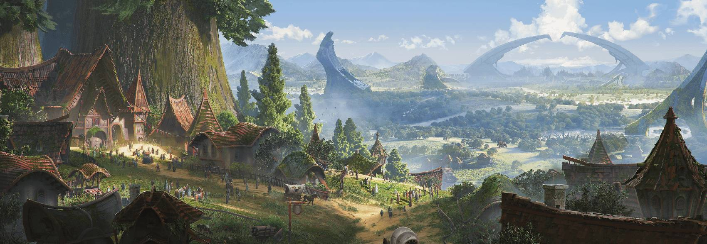

Current Campaign
An Adventure in Faerun
A homebrew campagin set in Faerun, led by our fearless forever DM: Jacob.
It has been a tumultuous few decades in Ferun, between dragongods, giant brains, and Thayen wizards, it's hard to say what will come next! Unfortunately for the sword coast, the answer lurks just in the shadows. The Cult of the Dragon is stirring once again and new heros will have to arrive to prevent their draconic plot.
View Campaign
Current Character
Rose Rime "The Frosted Rose"
Class:
Druid: Circle of Moon
Bard: College of Dance
A soft-spoken, hauntingly beautiful druid-bard, Rose Rime walks the line between gentle enchantment and stormbound fury, drawn by fractured memories toward a past she cannot fully remember.
View Character
The Golden Palette
Golden Herb Lamb Chops
42
Char-grilled lamb chops rubbed with rosemary, garlic, and golden mustard seeds. Served with a warm barley salad and garden greens.
42
View Full Menu
Interactive Desserts
Garden Bloom Petal Tart
18
A tart topped with “closed” sugar petals. When misted with a warm citrus spray at the table, the petals curl open like a blooming flower to reveal fruit and cream inside.
18
View Full Menu
Macarons
Violet Twilight Macarons
5 for $10
Lavender shells with blueberry-violet ganache, brushed with a shimmer of silver dust for a dusky, magical glow.